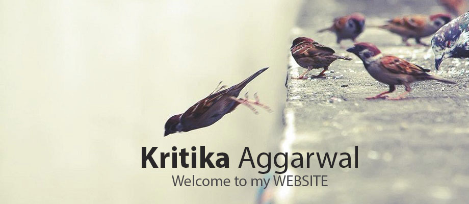
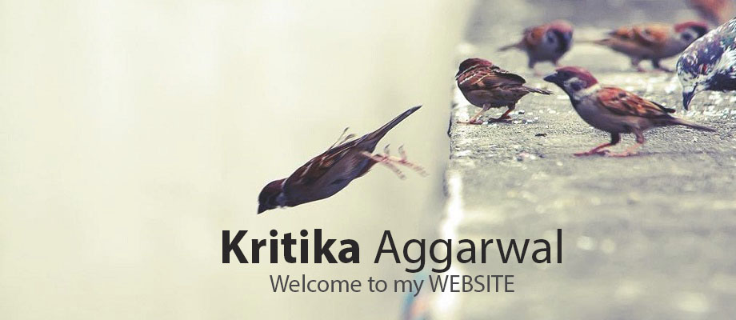
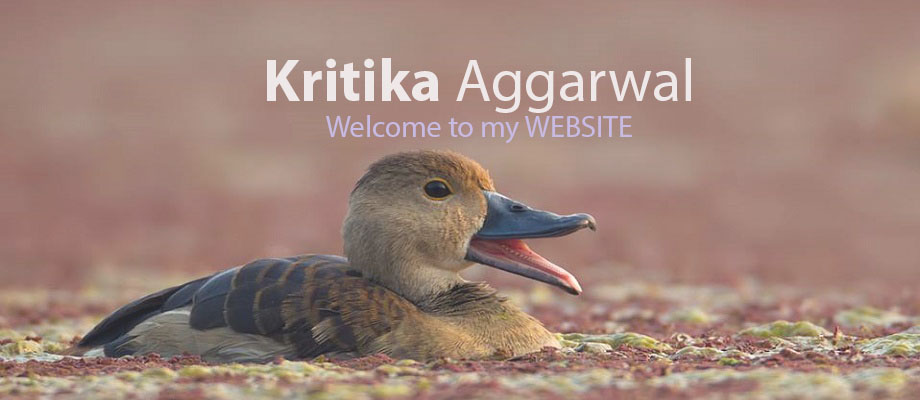
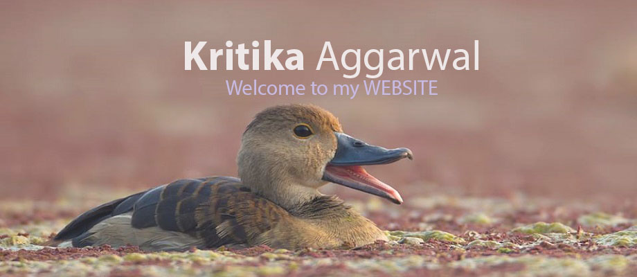

 


HELLO!
My name is Kritika Agarwal. I am originally from Sriganganagar, Rajasthan. I am currently an 4th year undergraduate student at Surendera Group of Institution Sriganganagar pursuing a major in Computer Science Engineering. Even though computer science is my main element of study, I'm always up for the challenge of exploring something new and looking forward to get new experience from different field of engineering. My friends find me to be very enthusiastic. Some of the things that are of interests to me as of now are Event Management, Coding, Web Development and Social Service. I am always eager to build something new. I like to stay active both physically and mentally and work best in an environment where I have team mates with similar ideologies.
Career Objective
I am a dedicated and motivated engineering graduate looking to leverage background in Client Management System, public communication, and expertise acquired by Academic Knowledge and previous Industrial work experience into an entry-level Software Development Engineer Position. I am Self motivated, don't get bored during coding.
My view on start-up
A startup is akin to a small plant. It doesn't offer any immediate benefits after planting, but just keeps sucking resources. Most plants you try to grow die before they become a tree. However, if it does survive and grows big, it can provide benefits for a long time to come. It can scale by growing vertically and also generate seeds for new child plants. Startups were very good initiative for economic growth of any country.
Another way to think of a startup is a new formula a chemist grows in his lab. It requires a lot of experimentation and have a high chances of failure. A startup entrepreneur who fails in an idea is akin to a chemist who builds an experiment that doesn't bring the result - it is part of the process.
One would get a lots of opportunities to learn and grow skills, ability and knowledge in startup as compared to already developed businesses.